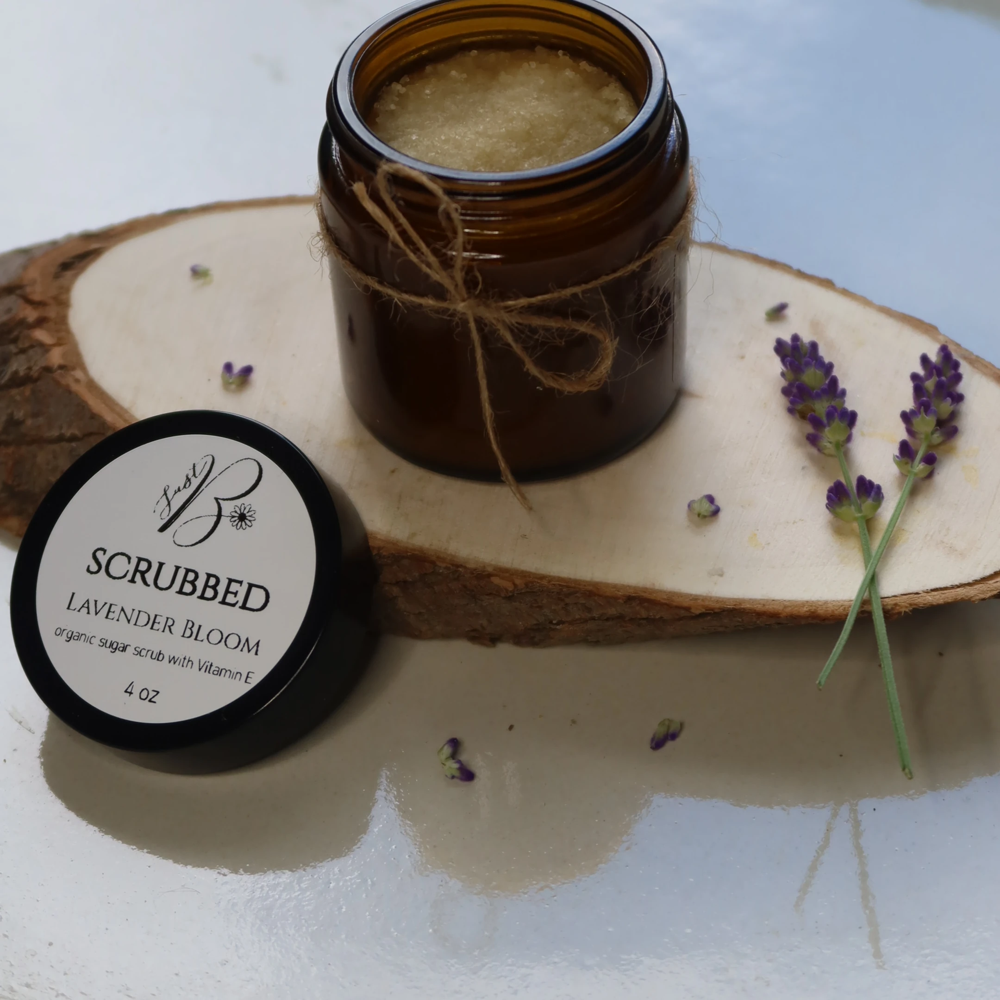

Handcrafted in Gatineau, Québec
Lavender Bloom

A rich, naturally exfoliating body scrub with organic cane sugar, unrefined shea butter, and organic jojoba, rosehip, and castor oils.
Ingredients
Organic Cane Sugar, Unrefined Shea Butter, Organic Jojoba Oil, Organic Rosehip Oil, Organic Castor Oil, Arrowroot Powder, All-Natural Vitamin E, Organic Essential Oils (Lavender, Grapefruit, Geranium, Frankincense).
Browse all products